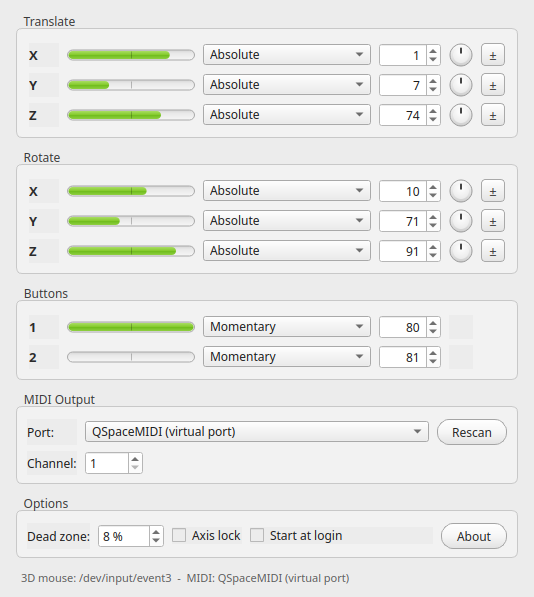

The window, modelled on Stefan Hoffmann's original Mac OS X MIDI Navigator.
What it does
All six degrees of freedom
Push, pull, lift and twist the cap: every axis and both hardware buttons send their own control change message.
Absolute and relative
Per axis you pick absolute values or one of three relative encodings - binary offset, two's complement or signed bit.
Dead zone and axis lock
A configurable dead zone filters the resting jitter, and axis lock transmits only the axis you are pushing, so parameters stop bleeding into each other while MIDI mapping. Any axis can be inverted with its ± button.
No driver required
The device is read directly: evdev on Linux, IOKit HID on macOS and raw HID on Windows. 3DxWare stays uninstalled.
Virtual MIDI port
On Linux and macOS the app publishes a QSpaceMIDI port
your host can connect to. On Windows, pick a loopMIDI port.
Lives in the tray
Close the window and the mapping keeps running in the system tray.
Settings are stored with QSettings and restored on start.
Starts with your session
One checkbox writes the platform's autostart entry - an XDG desktop file, a launch agent or the Run key - so the mapping is live right after login.
Nine languages
Danish, English, Finnish, French, German, Italian, Japanese, Russian and Simplified Chinese, following the system language.
Default mapping
| Axis | Direction | Default CC |
|---|---|---|
| X | Left / right | CC 1 |
| Y | Forward / backward | CC 7 |
| Z | Up / down | CC 74 |
| RX | Tilt left / right | CC 10 |
| RY | Tilt forward / backward | CC 71 |
| RZ | Rotate | CC 91 |
| Button 1 | Press | CC 80 |
| Button 2 | Press | CC 81 |
Using it with Renoise
- Start QSpaceMIDI and move the cap - the meters follow the device.
- In Renoise, open Preferences → MIDI and enable QSpaceMIDI as an input device.
- Right click the parameter you want to control and choose MIDI Map.
- Tick Axis lock in QSpaceMIDI, then push the axis you want to assign: only that axis is transmitted, so the mapping lands where you intended.
Building from source
git clone https://github.com/koppi/qspacemidi.git
cd qspacemidi
cmake -S . -B build -DCMAKE_BUILD_TYPE=Release
cmake --build build --parallel
./build/qspacemidiNeeds CMake 3.24+, a C++23 compiler and Qt 6.4+. libremidi is fetched
automatically. On Linux install qt6-base-dev,
qt6-l10n-tools, libasound2-dev and
libudev-dev first, and copy
packaging/99-spacenavigator.rules to
/etc/udev/rules.d/ so the device is readable without root.
Ready made .deb packages are built for Debian 12, 13 and 14
and for Ubuntu 24.04 and 26.04, on amd64 and arm64; every other Linux is
covered by the AppImage.